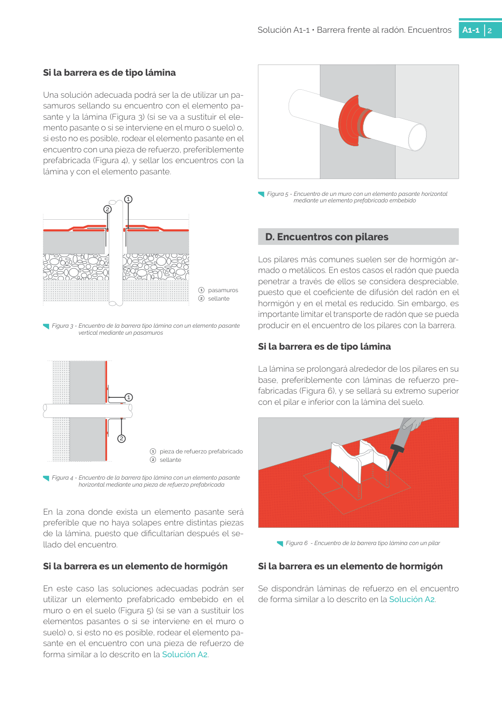

<!doctype html>
<html lang="es"><head><meta charset="utf-8">
<meta name="viewport" content="width=device-width, initial-scale=1">
<title>GUIA · p. 32 — Página 32</title><link rel="stylesheet" href="../estilo.css">
</head><body>
<nav><a href="../index.html">Índice</a> › <a href="../doc/guia-pdf-f3314b0414fe-sin-fecha-e58e54b822cf.html">GUIA</a> › p. 32</nav>

<header class="meta">
<p><strong>GUIA</strong> · Página 32 · versión sin-fecha</p>
<p>SHA256: <code>e58e54b822cf4ab00e258f0eb50c0f06a8c04e3730a7f530d224485e2a5bb02e</code> · página física 32 de 82 · métodos de encabezado
solo si están cotejados.</p>
<p><a href="../doc/guia-pdf-f3314b0414fe-sin-fecha-e58e54b822cf.html">Documento</a> · <a href="guia-pdf-f3314b0414fe-sin-fecha-e58e54b822cf__p0031.html">← p. 31</a> · <a href="guia-pdf-f3314b0414fe-sin-fecha-e58e54b822cf__p0033.html">p. 33 →</a></p>
<p>Formatos: <a href="../../contenido/docs/GUIA-PDF-f3314b0414fe/sin-fecha__e58e54b822cf/pagina/p0032.md">Markdown</a> · <a href="../../contenido/docs/GUIA-PDF-f3314b0414fe/sin-fecha__e58e54b822cf/bloque/p0032.json">JSON de bloques</a> · <a href="../../contenido/docs/GUIA-PDF-f3314b0414fe/sin-fecha__e58e54b822cf/fuente.pdf#page=32">PDF p. 32</a> · <a href="../../contenido/docs/GUIA-PDF-f3314b0414fe/sin-fecha__e58e54b822cf/figura/p0032.png">imagen PNG</a></p>
</header>
<nav class="paginas"><a href="../doc/guia-pdf-f3314b0414fe-sin-fecha-e58e54b822cf.html">Documento</a> <a href="guia-pdf-f3314b0414fe-sin-fecha-e58e54b822cf__p0031.html">← p. 31</a> <a href="guia-pdf-f3314b0414fe-sin-fecha-e58e54b822cf__p0033.html">p. 33 →</a></nav>
<h2>Encabezado de la página</h2><ul><li>Sin encabezado de fuente cotejada en esta página.</li></ul>
<p class="aviso">Página gráfica: el texto extraído puede ser parcial. Prevalece la imagen/PDF; depende de ellos.</p>
<pre class="literal">Solución A1-1 • Barrera frente al radón. Encuentros 
A1-1
2
Si la barrera es de tipo lámina
Una solución adecuada podrá ser la de utilizar un pa­
samuros sellando su encuentro con el elemento pa­
sante y la lámina (Figura 3) (si se va a sustituir el ele­
mento pasante o si se interviene en el muro o suelo) o, 
si esto no es posible, rodear el elemento pasante en el 
encuentro con una pieza de refuerzo, preferiblemente 
prefabricada (Figura 4), y sellar los encuentros con la 
lámina y con el elemento pasante.
 
1   pasamuros
2  sellante
2
1
2
1
1   pieza de refuerzo prefabricado 
2  sellante
En la zona donde exista un elemento pasante será 
preferible que no haya solapes entre distintas piezas 
de la lámina, puesto que dificultarían después el se­
llado del encuentro.
Si la barrera es un elemento de hormigón
En este caso las soluciones adecuadas podrán ser 
utilizar un elemento prefabricado embebido en el 
muro o en el suelo (Figura 5) (si se van a sustituir los 
elementos pasantes o si se interviene en el muro o 
suelo) o, si esto no es posible, rodear el elemento pa­
sante en el encuentro con una pieza de refuerzo de 
forma similar a lo descrito en la Solución A2.
D. Encuentros con pilares
Los pilares más comunes suelen ser de hormigón ar­
mado o metálicos. En estos casos el radón que pueda 
penetrar a través de ellos se considera despreciable, 
puesto que el coeficiente de difusión del radón en el 
hormigón y en el metal es reducido. Sin embargo, es 
importante limitar el transporte de radón que se pueda 
producir en el encuentro de los pilares con la barrera.
Si la barrera es de tipo lámina
La lámina se prolongará alrededor de los pilares en su 
base, preferiblemente con láminas de refuerzo pre­
fabricadas (Figura 6), y se sellará su extremo superior 
con el pilar e inferior con la lámina del suelo.
 
Si la barrera es un elemento de hormigón
Se dispondrán láminas de refuerzo en el encuentro 
de forma similar a lo descrito en la Solución A2.
  Figura 3 - Encuentro de la barrera tipo lámina con un elemento pasante 
vertical mediante un pasamuros
  Figura 4 - Encuentro de la barrera tipo lámina con un elemento pasante 
horizontal mediante una pieza de refuerzo prefabricada
  Figura 6  - Encuentro de la barrera tipo lámina con un pilar
  Figura 5 - Encuentro de un muro con un elemento pasante horizontal 
mediante un elemento prefabricado embebido
</pre>
<figure><a href="../../contenido/docs/GUIA-PDF-f3314b0414fe/sin-fecha__e58e54b822cf/figura/p0032.png"></a><figcaption>Imagen de la página 32 (PNG ya extraído; prevalece sobre fórmulas).</figcaption></figure>
<h2>Tablas candidatas de esta página</h2><ul><li><a href="../../contenido/docs/GUIA-PDF-f3314b0414fe/sin-fecha__e58e54b822cf/tabla/p0032_t01.json">p0032_t01.json</a> · <a href="../../contenido/docs/GUIA-PDF-f3314b0414fe/sin-fecha__e58e54b822cf/tabla/p0032_t01.csv">.csv</a> (0 × 0; candidata, no reconstruida aquí)</li></ul>
<h2>Referencias, notas y excepciones (página y vecinas)</h2><ul><li>Sin referencias o notas separadas en el JSON.</li></ul>
<h2>Apartados que incluyen esta página</h2><ul><li><a href="../apartado/guia-pdf-f3314b0414fe-sin-fecha-e58e54b822cf__a0091.html">6 · 6 	 encuentro con fachada</a></li><li><a href="../apartado/guia-pdf-f3314b0414fe-sin-fecha-e58e54b822cf__a0092.html">1 · 1   pasamuros 2  sellante</a></li><li><a href="../apartado/guia-pdf-f3314b0414fe-sin-fecha-e58e54b822cf__a0093.html">1 · 1   pieza de refuerzo prefabricado 2  sellante</a></li><li><a href="../apartado/guia-pdf-f3314b0414fe-sin-fecha-e58e54b822cf__a0094.html">ID a0094 · D. Encuentros con pilares</a></li></ul>

<footer>Generado estáticamente desde JSON normalizado; sin JavaScript ni servicios externos.
El JSON es la fuente; este HTML es caché reproducible.</footer>
</body></html>
